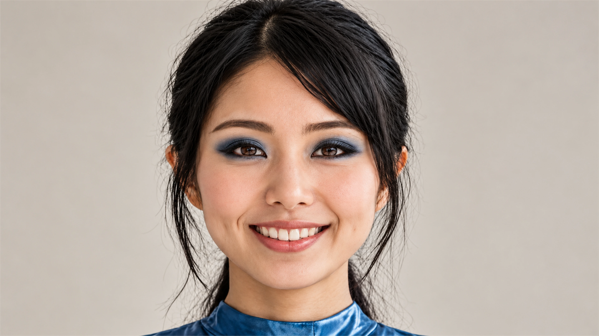

The girl behind the designs
Who am I?

The girl behind the designs.
A little about me.
Hi, I'm 23, Swiss-Chinese, a model, and a fashion designer. I'm someone who gets equally excited about a beautiful dress and the architecture of a city I've never explored before.
Growing up with two cultures has shaped the way I see design. I love the simplicity and precision I associate with Switzerland, and I also feel drawn to the energy, colour and ambition of China. Fashion is where those different parts of me meet.
And yes, I'm single. Happily single, actually. Right now, I'm enjoying my own company, following my ideas, and putting my energy into creating things I love. My life doesn't need a romantic storyline to feel exciting.
“I wanted to wear the feeling of a city.”
Why Shanghai Tower?
Shanghai feels like a perfect place to start. Its skyline is full of personality, and Shanghai Tower stands out because of the way its glass exterior twists as the building rises.
When I looked at its shape, I imagined movement rather than a straight architectural line. I started thinking about what that spiral could become in fabric: flowing layers, silver reflections, a fitted shape opening into something dramatic.
So I chose Shanghai Tower for my first DressTheWorld collection. The idea is to go from an architectural silhouette to an entire couture look, including the dress and accessories, and share the creative decisions along the way.
This is my fashion diary as much as my design project. There will be ideas I love immediately, details I change ten times, experiments with materials, and the excitement of seeing the finished outfit together.
Welcome to my world. I'm happy you're here.
Read my design diary ↗Swiss-Chinese
Model & fashion designer
Happily single & creating